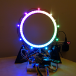
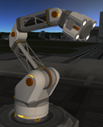
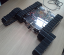
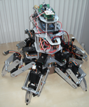
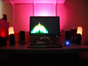
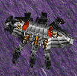

Below is a list of noteworthy personal and group projects that I have been involved in over the past decade. For projects with a degree of on-line presence, the alias of Zodius or ZodiusInfuser is used.
3D Design & Printing (2017 - Present)
|  |
I have recently purchased an Original Prusa i3 MK2S 3D printer and have been using it to realise custom designs for various projects, ranging from an external graphics card enclosure to a Stargate-inspired clock & bluetooth speaker. Imgur Albums: External GPU V1 (printed prior to getting the Prusa) |
Kerbal Space Program Modding (2013 - Present)
|  |
I am currently involved in a team working on the Infernal Robotics mod for Kerbal Space Program. This mod adds various actuating parts to the game, allowing for players to build creations such as deployable spacecraft, mars rover replicas, and even bipedal walking robots. It also features state-machine functionality via the Sequencer add-on, allowing players to visually program the movement of their creations. My current focus is on the Model Rework & Expansion, which adds a wider variety of movable parts to the mod, as well as specialist parts that fit in with the theme of robotic space missions, such as end effectors, propellers and wheels. In addition, I assist with the design and testing of new features for the mod and its add-ons, as well as create any user interface elements requested by the mod's programmers. YouTube Videos: Infernal Robotics Trailer, Mecanum Wheel DemoReview Videos: 2 Minute Mods (TinyPirate), KSP Mods (KottabosGames) |
ACSE Robot Competition (2013 - 2014)
|  |
I participated as an advisor in the 2014 ACSE Annual Search & Rescue Robot Competition at The University Of Sheffield. The competition involves teams working together, with assistance from their advisor, to design and build a robot capable of being tele-operated through an obstacle course, representing hazards faced by real search & rescue robots. As advisor of a team, I provided input on the design of the robot and specific component choices, as well as assisting with the final modelling and manufacture of the robot. The resulting robot was track-based with two tracked arms that could be angled independently to help overcome uneven terrain. YouTube Videos: Search & Rescue Robotics Competition 2014 |
Infuser Hexapod (2011 - 2013)
|  |
I designed, built and programmed a 6-legged walking robot, with four degrees of freedom per leg. The robot was created as an exercise in learning modern electronics platforms such as Arduino as well as the challenges involved in hardware development. The completed robot features three microcontroller boards, an audio processing and playback unit, ultrasonic sensors, Bluetooth, a camera on a pan-tilt mount, and RGB LEDs. Three custom circuit boards were created for the project, using DesignSpark PCB. The software was successfully able to have the robot walk forward and turn on the spot. YouTube Videos: First Steps |
Aurora Synestheria (2009)
|  |
I developed a Windows tray application for commanding the amBX lighting kit based on screen colour and currently playing sounds. A fast fourier transform library was used to analyse any sounds played and have the lights react in various user selectable ways. Additionally, I included a number of static and cycling effects, that would play when no screen or sound input was detected. Aurora Synesthesia became the most popular add-on within the amBX community. As of early 2016, the software and its source code can not be downloaded from Github. Websites: Github ReleaseYouTube Playlists: User Videos |
Total Annihilation Modding (2005 - 2011)
|  |
I created units for the classic real-time strategy game, Total Annihilation. Units ranged from simple tanks to complex bipedal mechs. In addition, collaborations were made with fellow members of the community to introduce features such as teleportation and inverse kinematics to the game. To store the units for others to download, I produced a website called Infusion Designs. This website also hosts a gallary of images from the game as well as concepts and renders of units. Websites: Infusion Designs |